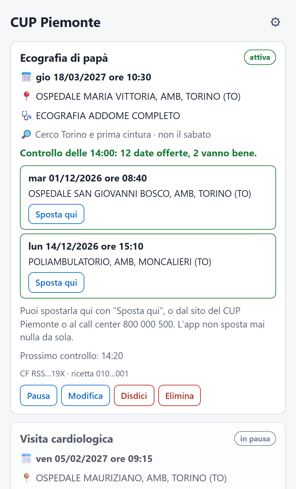
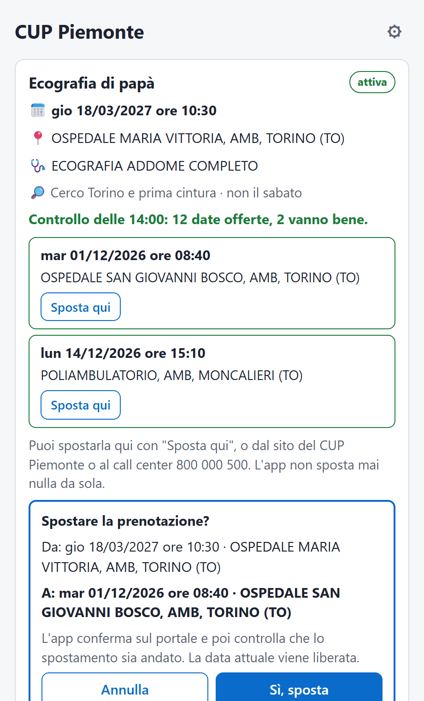

Una data prima per la tua visita, senza ricontrollare il CUP ogni ora
L'app controlla il portale CUP Piemonte ogni 20 minuti e ti avvisa con una notifica appena si libera una data prima della tua prenotazione. Sposta la prenotazione solo quando lo chiedi tu. Ricetta non ancora prenotata? Dalla versione 0.2.0 cerca anche il primo posto libero.
Scarica l'appWindows, macOS e LinuxVersione 0.3.0 (di prova) · gratuita e open source

Scarica
Linux
64 bit (x86_64). Scegli il pacchetto della tua distribuzione.
.debUbuntu 22.04+, Debian 12+, Mint 21+ .rpmFedora, openSUSE .AppImagele altre (più grande)Somme SHA-256 per controllare i file: SHA256SUMS.txt (come si usano: vedi Domande) · Tutte le versioni e le novità: pagina Releases
Al primo avvio
Gli installer non sono firmati, quindi il sistema avvisa una volta
La firma digitale costa e richiede un'identità registrata. Il codice è pubblico e gli installer li costruisce GitHub a partire da quel codice, dopo averli installati e avviati su macchine di prova.
Windows ("Windows ha protetto il PC"): premi Ulteriori informazioni, poi Esegui comunque.
macOS ("non può essere aperta" o "è danneggiata"): trascina l'app in Applicazioni e prova ad aprirla una
volta. Poi in Impostazioni di Sistema > Privacy e sicurezza (fino a macOS 12: Preferenze di Sistema >
Sicurezza e privacy) premi Apri comunque. Se il pulsante non c'è, nel Terminale:
xattr -dr com.apple.quarantine "/Applications/CUP Piemonte.app"
Linux: l'AppImage va resa eseguibile (chmod +x o dalle proprietà del file).
Come funziona
- Aggiungi la ricetta: un nome a piacere, codice fiscale e numero della ricetta elettronica (NRE) di una visita già prenotata sul CUP Piemonte o, dalla versione 0.2.0, di una ricetta non ancora prenotata.
- Scegli dove cercare (la stessa sede, il tuo comune o un altro, Torino e prima cintura, la provincia o dove propone il CUP) e i giorni da evitare.
- L'app controlla ogni 20 minuti, anche con la finestra chiusa: resta nella barra di sistema (su macOS nella barra dei menu). Il computer deve essere acceso e non in sospensione. Quando esce una data prima arriva una notifica con data, ora e luogo.
- Se ti va bene premi Sposta qui: l'app mostra la data attuale e quella nuova e sposta solo dopo il tuo Sì, poi controlla sul portale che lo spostamento sia andato. Per una ricetta non ancora prenotata il pulsante è Prenota qui, e da lì l'app cerca date prima.
I dati restano sul tuo computer
Codice fiscale e ricetta vanno solo al portale CUP, come quando lo usi dal browser. Sul computer sono cifrati, con la chiave di solito nel portachiavi del sistema. Nessun server, nessun account: l'app non manda niente a nessuno, legge solo da GitHub se c'è una versione nuova.
Non sposta mai niente da sola
Ogni spostamento, prenotazione o disdetta parte solo da un tuo clic e chiede conferma mostrando data, ora e luogo. Se l'esito non è certo, l'app lo dice e ti chiede di controllare sul sito del CUP.
Un controllo ogni 20 minuti, non di più
Ogni controllo apre gli appuntamenti sul portale come faresti tu, e il portale tiene riservata per circa 40 minuti la prima data che propone. Per questo l'app non controlla più spesso: metti in pausa le ricette che non ti servono più.
Leggera
Pochi MB su Windows e macOS, perché usa il motore web del sistema (l'AppImage per Linux ne porta uno suo ed è più grande). Si può far partire con il computer dalle impostazioni.

Domande
È un'app ufficiale?
No. È un progetto indipendente e gratuito, non collegato alla Regione Piemonte né al CSI Piemonte. Usa il portale pubblico cup.isan.csi.it come lo useresti tu.
Funziona con una ricetta non ancora prenotata?
Sì, dalla versione 0.2.0: l'app cerca il primo posto libero nella zona che scegli e ti avvisa. Prenota solo se premi Prenota qui e confermi, poi continua a cercare date prima. È una funzione nuova: se il portale mostra qualcosa di inatteso l'app si ferma senza prenotare e lo scrive. Con la versione 0.1.0 prenota prima la visita sul CUP, anche lontana, poi aggiungi la ricetta all'app.
Posso seguire più ricette?
Sì, anche di familiari, ognuna con la sua zona e i suoi giorni.
Sono sul telefono: c'è un'app?
No, l'app è per il computer (Windows, macOS, Linux). Apri questa pagina dal PC. Nel repository c'è anche un bot Telegram, ma va installato su un server proprio: è pensato per chi è pratico.
Come l'aggiorno?
Dalla versione 0.3.0 si aggiorna da sola: le versioni nuove sono firmate, si installano 48 ore dopo la pubblicazione e mai durante uno spostamento o una prenotazione; prima l'app copia le ricette. Per averla subito: ⚙ nell'app, poi "Aggiorna". Con il .msi, il .deb e il .rpm il sistema chiede la password, quindi l'app avvisa e aspetta che tocchi "Aggiorna". Chi ha una versione più vecchia installa una volta la nuova da questa pagina, sopra la vecchia: le ricette restano.
Windows dice che manca WebView2, o il PC non è collegato a internet durante l'installazione
L'installer scarica da solo WebView2 (il motore web di Microsoft, già presente in Windows 11 e nei Windows 10 aggiornati). Se non ci riesce, installa il "programma di installazione autonomo Evergreen" dalla pagina di WebView2, poi riprova.
Linux: non vedo l'icona nella barra
Su GNOME (Ubuntu la mostra già, Fedora e Debian no) serve l'estensione "AppIndicator and KStatusNotifierItem
Support". Senza, la finestra si riapre lanciando di nuovo l'app; per chiuderla del tutto:
pkill -x cup-piemonte.
Come controllo che il file scaricato sia integro?
Confronta la sua somma SHA-256 con quella in SHA256SUMS.txt:
- Windows (PowerShell):
Get-FileHash .\nome-del-file -Algorithm SHA256 - macOS:
shasum -a 256 -c SHA256SUMS.txt --ignore-missing - Linux:
sha256sum -c SHA256SUMS.txt --ignore-missing
Come la disinstallo e cancello i dati?
Prima, nell'app, elimina le ricette e spegni l'avvio con il computer. Poi disinstalla come le altre app (Windows: Impostazioni > App; macOS: sposta l'app nel Cestino; Linux: dal gestore pacchetti o cancellando l'AppImage). Le ricette cifrate e il registro restano in queste cartelle, da cancellare a mano:
- Windows:
%APPDATA%\io.github.ilmondovero.cupe%LOCALAPPDATA%\io.github.ilmondovero.cup - macOS:
~/Library/Application Support/io.github.ilmondovero.cupe~/Library/Logs/io.github.ilmondovero.cup - Linux:
~/.local/share/io.github.ilmondovero.cup
La chiave di cifratura sta nel portachiavi del sistema (Gestione credenziali di Windows, Accesso Portachiavi
su macOS, Secret Service su Linux) alla voce cup-piemonte, utente chiave-archivio.
Ho trovato un problema
Segnalalo nelle Issues del progetto. La pagina è pubblica: non scrivere mai codice fiscale, numero della ricetta o dati della visita.